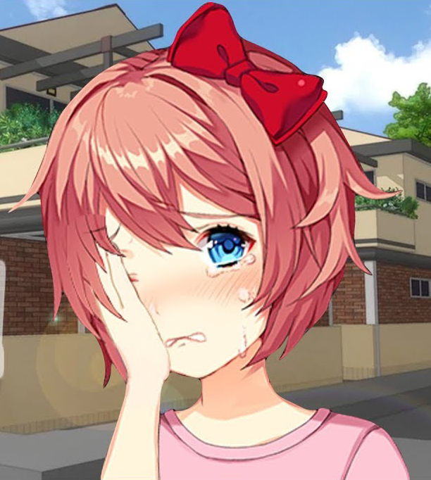

Our Final Heartbeat
Este mod fornece um final diferente para o jogo. Este final estará disponível após você coletar todas as CGs do jogo. Só então vai começar o Mod pra valer. Esse mod foi feito com todo o nosso amor e carinho pelo jogo, e como agradecimento pela experiência que ele me proporcionou. AVISO: Esta com preguiça de Zerar o Jogo denovo? Baixe o Save do Final dele aqui! Como Instalar: Apenas coloque o conteudo do .rar na pasta do jogo, se o jogo abrir e a monika não estiver na tela de titulo é porque deu certo, aproveite o MOD.
⬇ Download